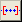
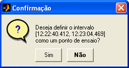
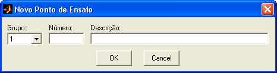
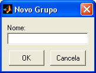

| Menu Ferramentas |
 |
Essa operação
permite definir o
intervalo de dados definido pelos limites do gráfico como um ponto de
ensaio.
- Selecione na abscissa o tempo de referência ou o
parâmetro ‘No. OBS.’;
- Usando as
funções de zoom, defina o intervalo desejado como a parte visível do
gráfico
principal;
- Clique em “Ferramentas ►
Gerenciamento de pontos de ensaio ...
►
Definir intervalo como ponto de ensaio”
ou no botão 
Caso não haja
tempo de referência
definido, o usuário será solicitado a cadastrá-lo.
Caso a abscissa
seja o parâmetro
‘No. OBS.’, o R_DAT o alternará para o parâmetro de tempo de
referência, com o
mesmo intervalo definido.
O R_DAT
irá informar o intervalo de tempo no formato HH:MM:SS.MS para
confirmação:

Indique o
grupo, o número e a
descrição sucinta do ponto de ensaio:

Para criar um novo grupo de pontos de ensaio, selecione a opção "Novo Grupo" e indique o nome após clicar "OK":

Os parâmetros
“Número” e “Descrição” são compostos por
textos alfanuméricos não-vazios, limitados respectivamente a oito e 56
caracteres.
O nome do novo grupo é composto por texto alfanumérico não-vazio, limitado a 16 caracteres.
Ao clicar “OK”,
o ponto será acrescentado à lista de pontos
de ensaio e poderá ser gerenciado pela ferramenta
de edição de pontos de ensaio.
Definir
Seleção como Ponto de
Ensaio
Essa operação
permite definir o
conjunto de observações selecionadas como um ponto de ensaio.
- Usando as funções de seleção do R_DAT, selecione o
conjunto de
observações desejado. Não é necessário que a seleção seja contígua; o
ponto de ensaio
será definido da primeira à última observação selecionada;
- Clique em
“Ferramentas ► Gerenciamento de pontos de ensaio
... ► Definir seleção como ponto de
ensaio” ou no botão  na
Barra de Ferramentas.
na
Barra de Ferramentas.
Caso não haja
tempo de referência
definido, o usuário será solicitado a cadastrá-lo.
O R_DAT
irá informar o intervalo de tempo no formato HH:MM:SS.MS para
confirmação:
Indique o
grupo, o número e a
descrição sucinta do ponto de ensaio:
Para criar um novo grupo de pontos de ensaio, selecione a opção "Novo Grupo" e indique o nome após clicar "OK":
Os parâmetros
“Número” e “Descrição” são compostos por
textos alfanuméricos não-vazios, limitados respectivamente a oito e 56
caracteres.
O nome do novo grupo é composto por texto alfanumérico não-vazio, limitado a 16 caracteres.
Ao clicar “OK”,
o ponto será acrescentado à lista de pontos
de ensaio e poderá ser gerenciado pela ferramenta
de edição de pontos de ensaio.
Após a confirmação, o usuário será questionado se deseja desselecionar os pontos.
| |
Novo
ponto de ensaio |
Validação dos
pontos de ensaio |
|